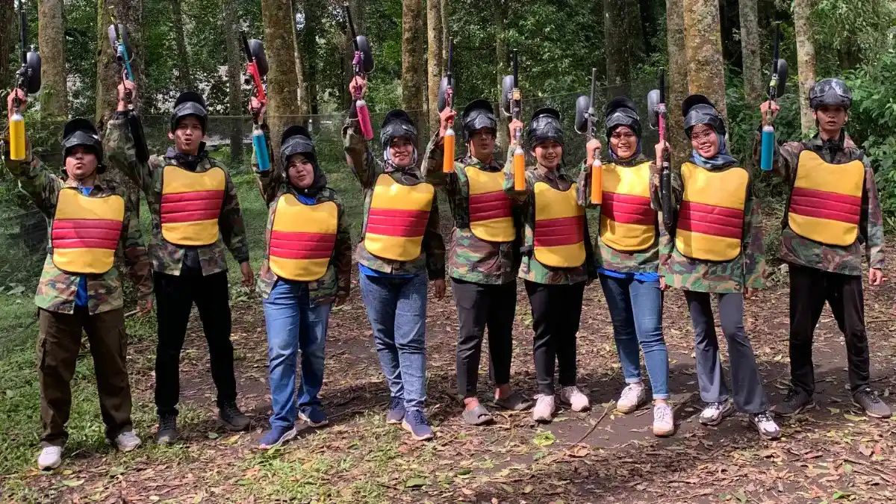

1. Apa Itu Outbound Team Building?
Kesalahan utama team building kantor yang sering membuat program kurang efektif adalah tidak adanya keselarasan antara aktivitas dengan kebutuhan tim, tujuan kegiatan yang tidak dirumuskan dengan jelas, dan tidak adanya refleksi setelah permainan. Program outbound team building sebaiknya disusun berdasarkan kebutuhan seperti komunikasi, kolaborasi, leadership, kepercayaan, atau problem solving agar aktivitas memiliki konteks yang jelas.
Team building berbasis luar ruangan pada dasarnya adalah proses intervensi kelompok yang bertujuan meningkatkan kemampuan interpersonal, memperjelas peran antaranggotatim, dan membangun komitmen bersama untuk mencapai tujuan organisasi.
Namun dalam praktiknya, banyak perusahaan menganggap bahwa sekadar mengumpulkan seluruh karyawan di lokasi wisata dan memainkan beberapa permainan fisik sudah cukup untuk menghasilkan tim yang solid. Pendekatan seperti ini sering kali mengaburkan perbedaan mendasar antara hiburan rekreasional dan proses pengembangan tim yang berorientasi pada hasil.

Membangun Sinergi Tim Tanpa Jenuh: 5 Permainan Outbound Kreatif & Kolaboratif
Ulasan ragam simulasi luar ruang yang dirancang untuk melatih koordinasi dan komunikasi aktif dalam suasana ceria.
2. Kenapa Team Building Kantor Bisa Gagal?
Banyak HR Manager dan pimpinan perusahaan merasa kecewa ketika melihat antusiasme peserta yang tinggi saat kegiatan di lapangan tidak berdampak pada pola kerja di kantor setelah acara selesai. Masalah miskomunikasi antarbagian, keengganan berkolaborasi lintas divisi, dan ketegangan interpersonal sering kali kembali muncul dalam hitungan minggu.
Kegagalan ini umumnya bukan disebabkan oleh lokasi atau anggaran yang kurang besar, melainkan karena program tidak dirancang untuk menjawab akar permasalahan dinamika tim yang sesungguhnya.
3. Kesalahan #1: Memilih Game Tanpa Tujuan yang Jelas
Salah satu kekeliruan paling umum dalam perancangan team building adalah memilih rangkaian permainan hanya karena terlihat seru di media sosial atau proposal penyedia jasa. Ketika permainan dipilih tanpa learning objective yang spesifik, peserta hanya fokus pada aspek kompetisi dan kemenangan instan.
Jika masalah utama tim adalah kurangnya transparansi komunikasi, maka permainan yang bersifat adu kecepatan fisik murni tidak akan memberikan pembelajaran yang relevan. Setiap simulasi harus memiliki kaitan langsung dengan tantangan kerja yang ingin diperbaiki.

Aktivitas team building harus dirancang dengan tujuan pembelajaran yang terhubung langsung dengan kebutuhan organisasi.
4. Kesalahan #2: Tidak Menyesuaikan Aktivitas dengan Kondisi Tim
Setiap kelompok karyawan memiliki karakteristik unik yang harus diperhitungkan sebelum menentukan alur kegiatan:
- Rentang Usia dan Kondisi Fisik: Aktivitas fisik yang terlalu berat bagi peserta senior dapat menurunkan semangat partisipasi dan menimbulkan ketidaknyamanan.
- Struktur dan Ukuran Tim: Kelompok berjumlah besar membutuhkan modul yang memungkinkan semua orang aktif tanpa waktu tunggu berlebihan.
- Karakteristik Pekerjaan: Tim teknis analitis memerlukan pendekatan simulasi yang berbeda dibandingkan tim pemasaran yang ekspresif.
- Kebutuhan Interaksi: Mempertemukan divisi yang selama ini jarang berkomunikasi membutuhkan alur pencairan suasana bertahap.
5. Kesalahan #3: Tidak Ada Sesi Debrief atau Refleksi
Sesi debrief adalah momen kunci yang membedakan antara outbound edukatif dan permainan biasa. Tanpa sesi refleksi bersama fasilitator, peserta tidak memiliki ruang untuk menyadari apa yang sebenarnya terjadi selama simulasi:
- Apakah ada anggota yang tidak dilibatkan dalam menyusun strategi?
- Bagaimana cara tim merespons kegagalan di pos permainan?
- Siapa yang mengambil peran memimpin dan bagaimana pembagian tugas disepakati?
Melalui dialog terarah pada sesi debrief, peserta dapat merefleksikan perilaku mereka dan menyepakati komitmen bersama untuk diterapkan di lingkungan kerja.

Rekomendasi Vendor Outbound Perusahaan Profesional di Batu & Malang
Pelajari standar transparansi penawaran dan kapabilitas fasilitasi yang wajib diperhatikan saat memilih vendor kegiatan.
6. Fun Games vs Team Building: Memahami Perbedaan Esensial
Untuk menghindari salah sasaran dalam pengadaan kegiatan, kenali perbedaan fokus antara program fun games perusahaan dan program team building berikut:
- Fun Games: Bertujuan utama menyegarkan pikiran (*refreshment*), menciptakan keceriaan, dan mencairkan kebekuan komunikasi (*ice breaking*) melalui permainan ringan dengan dinamika kompetisi yang santai.
- Team Building: Bertujuan meningkatkan kompetensi kerja tim, menyelesaikan hambatan kolaborasi antardivisi, dan menumbuhkan komitmen kerja melalui simulasi bertahap dan refleksi terpandu.
Apabila organisasi Anda membutuhkan pendalaman kepemimpinan strategis bagi para supervisor dan manajer, program dapat diperluas ke dalam modul program leadership.
7. 7 Langkah Merancang Team Building yang Lebih Terarah
Berikut adalah tahapan sistematis yang dapat diterapkan HRD untuk memastikan kegiatan memberikan dampak optimal:
- Menentukan Objective: Rumuskan tujuan spesifik yang ingin dicapai (misalnya memperkuat kerja sama antardivisi atau membangun rasa saling percaya).
- Memahami Kondisi Tim: Identifikasi profil peserta, rentang usia, dan dinamika internal yang sedang berlangsung.
- Memilih Aktivitas yang Relevan: Tentukan simulasi yang secara langsung menguji kompetensi yang menjadi sasaran pembelajaran.
- Menyusun Briefing yang Jelas: Pastikan instruksi aturan main dan aspek keselamatan disampaikan dengan jelas sebelum simulasi dimulai.
- Menjalankan Aktivitas secara Terstruktur: Fasilitasi jalannya permainan dengan memperhatikan interaksi antaranggotatim.
- Melakukan Debriefing Mendalam: Ajak peserta berdialog mengenai dinamika permainan dan hikmah yang dapat diterapkan di tempat kerja.
- Mengevaluasi dan Menindaklanjuti: Tinjau perubahan pasca-kegiatan dan dukung komitmen baru yang telah disepakati bersama.

Program Corporate Leadership Camp
Pelatihan kepemimpinan adaptif dan pengambilan keputusan strategis bagi manajer dan pimpinan tim di alam terbuka.
8. Checklist HRD Sebelum Memilih Program Team Building
Gunakan checklist berikut sebelum menyetujui proposal kegiatan outbound dari penyedia jasa:
- Apakah proposal menjelaskan kaitan antara jenis permainan dengan tujuan kegiatan?
- Apakah susunan rundown memberikan waktu yang cukup untuk sesi briefing dan debriefing?
- Apakah tingkat kesulitan fisik aman dan sesuai dengan profil seluruh peserta?
- Apakah fasilitator memiliki pemahaman yang baik tentang dinamika organisasi kerja?
- Apakah ada prosedur keselamatan dan kesiapan tim medis di lokasi kegiatan?
- Apakah ada rencana alternatif apabila cuaca di lokasi luar ruangan berubah mendadak?
9. Matriks Evaluasi Kesalahan & Solusi Team Building
Tabel berikut menguraikan potensi dampak dari kesalahan umum dalam team building beserta solusi praktisnya:
| Kesalahan | Dampak Potensial | Solusi |
|---|---|---|
| Game dipilih tanpa tujuan | Aktivitas hanya menjadi hiburan sesaat | Tentukan learning objective sejak awal |
| Tidak memahami kondisi peserta | Aktivitas tidak sesuai dengan profil tim | Sesuaikan modul dengan usia dan fisik peserta |
| Briefing tidak jelas | Peserta bingung dan aturan diabaikan | Jelaskan aturan main dan tujuan secara terperinci |
| Tidak ada debrief | Pembelajaran kurang terarah ke dunia kerja | Lakukan sesi refleksi terpandu setelah simulasi |
| Mengabaikan safety | Risiko keselamatan peserta meningkat | Lakukan briefing keselamatan dan siapkan P3K |
Konsultasikan Kebutuhan Team Building Perusahaan Anda
Konsultasikan kebutuhan team building perusahaan Anda bersama Vendor Outbound melalui WhatsApp +62 82211221909. Sampaikan jumlah peserta, tujuan kegiatan, dan konsep acara yang diinginkan. Kami siap mengirimkan proposal penawaran, rundown acara, dan estimasi biaya dalam 1x24 jam.
Hubungi Kami via WhatsAppKesimpulan
Poin Kunci Memaksimalkan Team Building
Keberhasilan program team building ditentukan oleh ketepatan perancangan modul yang menjawab dinamika riil tim serta adanya sesi refleksi terpandu pasca-simulasi.
- Rumuskan sasaran perbaikan tim secara spesifik sebelum menentukan aktivitas di lapangan.
- Gunakan fasilitator yang memiliki kompetensi memandu sesi debriefing kontekstual.
- Tindak lanjuti komitmen yang terbangun selama kegiatan ke dalam lingkungan kerja sehari-hari.
Pertanyaan yang Sering Diajukan (FAQ)

Arby Ardiansyah
Praktisi pengembangan SDM dan perancang program experiential learning dengan pengalaman lebih dari 8 tahun memfasilitasi ratusan kegiatan outbound korporat, BUMN, dan institusi pendidikan di seluruh Jawa Timur.